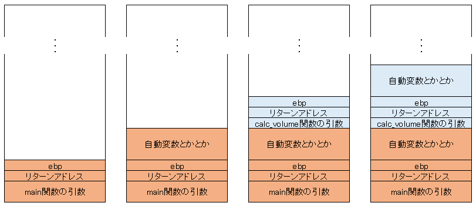

第5章 ～関数～
関数とは
既にそこかしこで出てますが、改めて。関数とは、処理の集合です。C/C++では、すべてのプログラムは必ず1つ以上の関数が含まれています。
これまで見てきたmain関数も関数の一つです。C言語においてとにかく大事なものです。そのくせ独習Cの説明は十分とは言えません、あれで説明してるつもりなんですかね。
関数の一般的な書き方は
[戻り値の型] ([関数呼び出し規約]) [関数名](仮引数リスト){
//処理
}
です。戻り値の型がvoid以外の時は、必ず戻り値を返さなければなりません。
//これは誤り
int do_something(void){
//do something
}
//これは正しい
int do_something2(void){
//do something
return 0;
}
関数の呼び出し規約は省略することが多いが(その場合__cdeclになる)、Win32APIを使うならお世話になるだろし、C++のクラスのメンバー関数は呼び出し規約が更に異なります。後述する。
実際に関数を作るときには「プロトタイプ宣言」という物を書くことになる。書き方を立方体の体積を求める関数を例に説明する。
double calc_volume(double si, double s2, double s3);
//[戻り値の型] ([関数呼び出し規約]) [関数名](仮引数リスト);
2行目が関数のプロトタイプ宣言と呼ばれるものだ。戻り値の型、(呼び出し規約)、関数名、仮引数リストを書く。
なお、その関数を使用するまでに関数が宣言されている必要があるため、原則として#define文やtypedefや定数宣言の直後にまとめて書いておくこと。
このcalc_volume関数が定義されるのは、10～13行目の部分だ。ここで関数の実際の処理を書く。
この関数が呼び出される7行目だ。ここで初めて実際に定義に基づいて処理を行う。calc_volume関数内のreturn文にかいたものが変数resultに代入されている。
C++11の戻り値の型を後置する記法
なにも難しくないです。ようは先のcalc_volue関数が
auto calc_volume(const double s1, const double s2, const double s3) -> double {
return s1 * s2 * s3;
}
とも書ける、という話です。これのありがたみはもうしばらくわからないでしょう。
C標準ライブラリ
C標準ライブラリとは、プログラマーがよく使う機能をひとまとめにしてC言語自体が提供している関数群のことです。
代表的なものとしては、puts, getcahr, fgets, time, clock, printf, sprintf, scanf, strcomp, memcpy, malloc, callocなどの関数でしょうか。
これらはいくつかのヘッダーファイルをincludeすることで使えます。
例えば、printf関数はstdio.h, calloc関数はstdlib.h, clock関数はtime.hをincludeすることで使えます。
includeし忘れると、コンパイラーに「そんな関数知らねーよ」と怒られます。
ここで改めてはじめて書いたコードを見て欲しい。
puts関数が出てくると思う。これはどういう関数なのだろうか？この関数はC標準ライブラリの関数なので関数名でググってみょう。大概は「関数名 MSDN」で適当な情報がでる。
https://msdn.microsoft.com/ja-jp/library/tf52y4t1.aspx
以下の様な点に着目して見るといい。
関数の型
宣言、とか定義とかさっきから言ってるところからもう察しているかも知れませんが、関数も変数と同じくオブジェクトなので、メモリー上に実体があり、型も存在します。
「型」がなにかについては変数のところで説明しましたが、「型」とはコンパイラにオブジェクトをどういう風にメモリー上に配置したらいいのか教えるものなのでした。
関数になってもなにも変わりません。コンパイラーに
を教えます。だからcalc_volume関数の型は、「double(double, double, double)」型です。これが分かれば、コンパイラは関数を呼び出すアセンブリコードを書いてくれます。
このことは関数ポインタのところで大事になるので、覚えておいてくだい。
関数を作って使ってみよう
細かい理屈はひとまず置いておいて、まあ関数を作ってみましょう。オーバーフロー対策はif文を教えてないのでまだいいです。
練習問題
-
main関数の他に以下の機能を持つ関数を書き、main関数から呼び出せ。
- 機能
- puts関数を呼び出し、「関数arikitari_na_kannsuuが実行されました」と表示する
- プロトタイプ
void arikitari_na_kannsuu(void);
こんな感じかな？
#include <stdio.h>
void arikitari_na_kannsuu(void){
puts("関数arikitari_na_kannsuuが実行されました");
}
-
以下の機能を持つ関数を作成し、main関数から呼び出し、戻り値をprintf関数で表示せよ。
- 機能
- 2つの引数を受け取り、その和を返す。
- プロトタイプ
uint32_t add(uint16_t a, uint16_t b);
- ヒント
-
main関数側はこう書けばいい。
printf("%ld", add(7, 2));
当たり前だが、stdint.hをincludeしなければならない。
#include <stdio.h>
#include <stdint.h>
uint32_t add(uint16_t a, uint16_t b){
return a + b;
}
-
以下の機能を持つ関数を作成し、main関数から呼び出し、戻り値をprintf関数で表示せよ。
- 機能
- COLORREF型の引数を受け取り、G(緑色)の値を返す。
- プロトタイプ
uint8_t myGetGValue(COLORREF color);
- ヒント
-
COLORREF型を使うにはwindows.hを一番先にincludeする必要がある。
main関数側はこう書けばいい。
COLORREF color = RGB(137, 195, 235);//RGBマクロでCOLORREF型の値を作製
printf("%d", myGetRValue(color));
当たり前だが、stdint.hをincludeしなければならない。
内部の演算は右シフトとAND演算をすれば求められるはず。
COLORREF型については既に説明した。windows.hをincludeすればあそこで書いたtypedefが既にされている。
マクロ GetGValue を用いてはならない。
#include <windows.h>
#include <stdio.h>
uint8_t myGetRValue(COLORREF color){
return static_cast<uint8_t>((static_cast<DWORD_PTR>(color)) & 0xff);
}
スタック領域
Ｃで扱うメモリ領域は一般に、プログラム領域、静的領域、スタック領域、ヒープ領域の 4つに大別されます。
main関数が呼び出される時にある程度広い範囲のメモリーを確保します。この領域をスタック領域、といいます。
変数をメモリー上に確保して～とか、関数はメモリー上に実体があり～とか言ってましたが、ここのことです。
自動変数(これまで見てきた変数)や関数の引数、戻り値、リターンアドレスなどはここに記録されます。
ではどういう風に記録されていくのでしょうか？
- main関数が呼ばれるとき、スタック領域を確保する
- 引数を後ろから順に書き込む
- 復帰情報(リターンアドレスなど)を書き込む
- 関数の処理が始まって、変数が確保されたりする
わかりにくいので図で説明します。

プログラムが呼ばれると(特に定めない限り)main関数が呼ばれます。この時スタック領域が確保されるわけです。そのあとにmain関数の引数やら戻り値の領域やらリターンアドレスが書き込まれます。(図の一番左)
何が言いたかったか、ですが、単純。関数も変数となんら変わりません！・・・てことです。いやね、これがわからんと関数ポインタが説明できんのよ。
main関数の引数って何？
先ほどさらっと「引数」という言葉を使いましたが、解説がまだでした。実例を見て行きましょう。
さて疑問が噴出していることと思いますが気にすることはありません。[i]とかifとかforとかはちゃんと後で説明します。これをコンパイルしてできた002_show_argv.exeを
002_show_argv.exe arikitari na world!
のように実行してみてください。すると
argv[0]:[任意の場所]\002_show_argv.exe
argv[1]:arikitari
argv[2]:na
argv[3]:world!
のようになったと思います。こんな感じでexeはコマンドライン引数を受け取れるんだなぁと思っていてください。
これを使ってプログラムにいろいろな値を与えられるわけです。
main関数の戻り値の意味
最初の方でも書きましたが、main関数はint型で、必ず値を返さなければなりません。
今までのサンプルコードを見てきた人は、｢main関数は必ず0を返さなければいけないんですか？｣と思ったのではないでしょうか？(むしろ思っててほしいです)
いいえ、そんなことはありません、下のサンプルを見てください。
#include<cstdio>
#include<cstdlib>
#include<climits>//in gcc
#include<cerrno>//in gcc
#ifndef _cplusplus
#define nullptr NULL
#endif
int get_integer_num(const int max, const int min){
//機能：標準入力を数字に変換する。
//引数：戻り値の最大値,戻り値の最小値
//戻り値：入力した数字、エラー時は-1,EOFのときはEOF
char s[100];
char *endptr;
if (nullptr == fgets(s, 100, stdin)){
return INT_MIN;
}
if ('\n' == s[0]) return INT_MIN;
errno = 0;
const long t = strtol(s, &endptr, 10);
if (0 != errno || '\n' != *endptr || t < min || max < t)
return INT_MIN;
return static_cast<int>(t);
}
int main(void){
printf("今の時間帯は？\n1.朝 2.昼 3.夜(まだ寝ない) 4.夜(もう寝る)\n");
const int time = get_integer_num(4, 1);
switch (time){
case 1:
printf("おはようございます\n");
break;
case 2:
printf("こんにちは\n");
break;
case 3:
printf("こんばんは\n");
break;
case 4:
printf("おやすみなさい\n");
break;
default:
time = -1;
break;
}
return time;
}
このサンプルコードでは、時間帯を聞いたところで入力された値が返されるようになっています。
｢上のint get_integer_numは何？｣って？後で説明するのでここではスルーしてください。
このように、main関数では必ずしも0を返す必要はありません。この程度のコードなら普通に0返せばいいじゃんと思うかもしれませんが、そんなのは今回どうでもいい話です。
問題なのはmain関数は0以外の値を返しても大丈夫かどうかなので。
じゃあメイン関数の戻り値にはどういう意味があるのかって？そのプログラムの内部においては何にも関係ありません。この値はプログラムの外部に影響があります。
我々が作ったプログラムはどうやって呼ばれるかというと、別の何らかのプログラムが呼び出しています。普通の関数がそうであるように、main関数も例外ではなく、呼び出し元に値を返します。
この値をどう処理するかは各ＯＳによって異なり、さらにバッチファイルなどから呼び出す場合はその値に対する挙動はプログラマーが決められます。
細かいことはどうでもいいです。とりあえずここでは、main関数内の値はプログラム内部には影響がないってことだけ覚えておいてください。
関数を書く時の注意
まずはこれを見てください。
なんと330行！まあ世の中にはひとつの関数で2458行になる超絶関数(通称never ending function)もあるにはあるのですが、さすがに紹介したくない。
Ｃプログラミング診断室／最長不倒関数／プログラムの紹介
http://www.pro.or.jp/~fuji/mybooks/cdiag/cdiag.10.2.html
このプログラムの出典は
Ｃプログラミング診断室／上司が問題／はじめに
http://www.pro.or.jp/~fuji/mybooks/cdiag/cdiag.3.1.html
で、そのサイトにこのプログラムの問題点が詳しく書いてありますが、見て行きましょう。
-
変数名が混乱を招く名前になっていること
-
短くすることにこだわって後で見たときに分かりにくい名前にしている
-
意味のない大文字と小文字の使い分けをしている
-
フラグ(条件変化の一時保存変数)の多様
-
同じことの記述
-
main関数が長い
-
意味不明な初期化をしている
などが挙げられます。他にもありますけどまあそこは慣れていくことで学んでください。
プログラミングを行う時に大切なことは
-
後で見直しても分かりやすいこと
-
書く量は少なくすること
-
関数は短く。特にmain関数は最小限の長さで
今回のソース、私が見ても途中で見るの嫌になりました。というか見るのが嫌になるのは私だけではないと思います。
皆さんはこんなの書かないでください。不具合が発生しても原因究明に無駄に時間割くことになります。
大事なことなのでもう一度言います。
プログラムは見やすく・短く・少なくです。
練習問題２
換算内申(基本５教科：1.0倍、実技４教科：1.3倍)を300点満点の調査書点に換算するプログラムを作成せよ。
小数点以下は切り捨てなので変数の型は全てintでよい。
なお、値の取得については下のgetnum関数を用いること。
メイン関数が５行を超えたら公開処刑です。
アドバイス
1.3倍する箇所を×1.3の部分まで全て( )でくくって頭にstatic_cast<int>をつけるとwarning回避できます。
数値入力には以下のget_score関数を利用する。エラー時は自動的にもう一度数値入力を求めるのでエラー処理は書かなくて良い。
#include<iostream>
#include <exception>
typedef unsigned int uint;
uint get_score(const uint max, const uint min) {
uint re;
try {
std::cin >> re;
}
catch (std::exception& er) {
re = 0;
}
return (re < min || max < re) ? get_score(max, min) : re;
}
int main(void){
puts("値を入力してください。\n");
const auto num = get_score(9, 0);//カンマの左側の数字が入力できる値の最大値、右が最小値
printf("あなたが入力した値は%dです。", num);
return 0;
}
C++11/14のlambda
lambdaとかいて「ラムダ」と読みます。関数のページに書いてることから察せると思いますが一種の関数です。見て行きましょう。
#include <iostream>
#include <cstdint>
#include <cstdlib>
#include <cerrno>
typedef uint64_t num_store_t;
constexpr num_store_t search_max_temp = 117800;
int main(int argc, char* argv[]){
const auto search_max = (1 == argc) ? search_max_temp : [](const char* str) -> num_store_t {
errno = 0;
const auto tmp = strtoull(str, nullptr, 10);//引数があればそれを採用する
return (0 == errno) ? tmp : search_max_temp;//引数が異常な時は(仮)の値を使用
}(argv[1]);
std::cout << "search_max: " << search_max << std::endl;
return 0;
}
lambdaとか仰々しい名前がついてますがようは関数なので仮引数リストも戻り値の型も関数定義も関数呼び出しもあります。
仮引数リストは(const char* str)の部分です。普通の関数となんら変わりませんね。
戻り値は、 -> num_store_tの部分です。C++11で追加された関数の戻り値を後置する記法そのものですね
(argv[1])の部分はこれまで関数を呼び出すときに変数を渡していたところですね。
このようにわざわざ関数名考えて関数を作るまでもないような、しかし関数を使った方がわかりやすくかける時、lambdaは重宝します。
ちなみに上の例はもう少しシンプルに書けます。
#include <iostream>
#include <cstdint>
#include <cstdlib>
#include <cerrno>
typedef uint64_t num_store_t;
constexpr num_store_t search_max_temp = 117800;
int main(int argc, char* argv[]){
const auto search_max = (1 == argc) ? search_max_temp : [&]{
errno = 0;
const num_store_t tmp = strtoull(argv[1], nullptr, 10);//引数があればそれを採用する
return (0 == errno) ? tmp : search_max_temp;//引数が異常な時は(仮)の値を使用
};
std::cout << "search_max: " << search_max << std::endl;
return 0;
}
が、ここまではまだ覚えないでいいです。詳しく知りたい方は
lambda 完全解説 | 本の虫
http://cpplover.blogspot.jp/2009/11/lambda.html